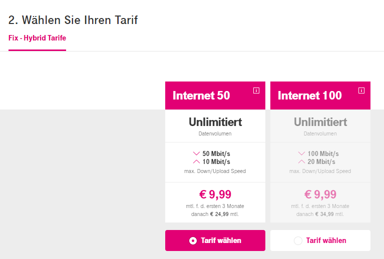

Hallo zusammen,
bei uns hat sich kurzfristig eventuell die Möglichkeit für eine neue Wohnung ergeben. Derzeit habe ich das UPC Fiberpower M Paket mit 100/10 (Down/Up).
In der potentiellen neuen Wohnung gibt es wohl nur eine Telefondose, zumindest habe ich da keine typische UPC Buchse gefunden. Laut Magenta Homepage kann ich an der genannten Adresse/Türe zwischen "Internet 50" oder "Internet 100" wählen. Dabei werden die Begriffe "Fix Internet" bzw. "Hybrid Internet" genannt. Der Speed von 100 klingt ja schon mal interessant. Was konkret bedeutet das? Was ist da der Unterschied zwischen Fix und Hybrid?!
Wenn ich bei meiner jetzigen Adresse den Verfügbarkeits-Check mache, sehe ich "Fiber Tarife" 50, 100, usw. - das klingt wohl eher nach dem Paket, das ich damals abgeschlossen hatte.
Meine konkrete Frage:
- Kann ich meinen jetzigen Vertrag bzw. mein Produkt so weiterverwenden?
Aufgrund der Bezeichnung glaube ich das ja mal nicht, sondern es scheint, als müsste ich in der neuen Wohnung auf Fiberpower verzichten und zu einem Fix Internet bzw. Hybrid Internet ausweichen, sehe ich das richtig?
- Was ist da genau der Unterschied? Wie ist das im Vergleich zum jetzigen Fiberpower hinsichtlich Ausfällen, Geschwindigkeit, Schwankungen usw.?
Vielen Dank euch allen!
Hoffe, ihr könnt mir weiterhelfen!
------------------------------
Muss die Frage leider in der Community stellen, weil Mailkontakt ja nicht mehr möglich ist und anrufen aufgrund meiner Auslandsdienstreise derzeit sehr teuer wäre ;-)
Hey @flying_David
vor 55 Minuten schrieb flying_David:Was konkret bedeutet das? Was ist da der Unterschied zwischen Fix und Hybrid?!
vor einer Stunde schrieb flying_David:- Was ist da genau der Unterschied? Wie ist das im Vergleich zum jetzigen Fiberpower hinsichtlich Ausfällen, Geschwindigkeit, Schwankungen usw.?

Wenn die Abfrage Fix-Hybrid ausgibt, bedeutet dies, dass der Vertrag entweder per DSL oder Hybrid erfüllt wird.
DSL ist die Kupferleitung von A1, wobei es dann im Glasfaser-Bereich zu Magenta überführt wird (Virtuelle-Entbündelung). Hier hast du eine sehr stabile Bandbreite.
Bei Hybrid wird die DSL Leitung mit LTE kombiniert. Dazu bekommt man das Huawei HA35-22, da es kein anderes kompatibles gibt. Hier ist die Bandbreite auch vom Empfang und der Auslastung des LTE Netz abhängig, aber ungefähr das, was die DSL Leitung hergibt sollte immer ankommen. Je nach Auslastung und Nutzungsklassen der anderen Kunden im Magenta LTE-Netz in deiner Umgebung wird der LTE Teil recht klein Ausfallen, da Hybrid die Nutzungsklasse K hat (Skaaler A bis K). Und das Hybrid Modem kann auch nur LTE Cat 4 (nur ein Band im DL).
Von Schwankungen her würde ich sagen:
DSL>Coax ("Fiber")>Hybrid
vor einer Stunde schrieb flying_David:- Kann ich meinen jetzigen Vertrag bzw. mein Produkt so weiterverwenden?
Aufgrund der Bezeichnung glaube ich das ja mal nicht, sondern es scheint, als müsste ich in der neuen Wohnung auf Fiberpower verzichten und zu einem Fix Internet bzw. Hybrid Internet ausweichen, sehe ich das richtig?
Ja, es wird ein Technologie und Tarifwechsel in einen aktuellen Magenta Tarif stattfinden müssen.
LG NTM
PS: Hier noch das Umzug FAQ
Vielen Dank NTM für die ausführliche und rasche Beantwortung!
Dann kann ich zumindest diesen Punkt bei der Wohnungsentscheidung quasi als positiv abgehakt vermerken!
Alles weitere muss ich dann entsprechend ja eh über den Kundenservice und Formulare veranlassen.
Danke dir!
Viele Grüße,
David